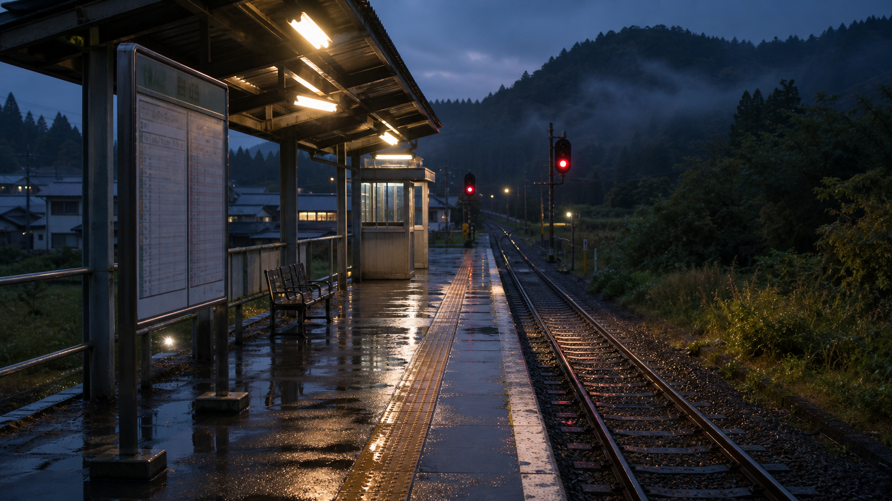

OPERATION NOTICE
雨天時の月見台方面運転について
雨天時は月見台駅北側階段の安全確認を行うため、一部列車に遅延・運休・回送扱いが発生する場合があります。最新の運行情報と臨時時刻表をご確認ください。
運行情報へ
Hoshigaura Railway
星ヶ浦、汐見浜、月見台、黒松口を結ぶ小さな鉄道です。運行情報、駅案内、沿線観光、90周年記念公開資料をご案内します。
ABOUT HOSHIGAURA LINE
星ヶ浦鉄道は、海沿いの住宅地と高台の旧駅舎をつなぐ地方鉄道です。日々の移動に加えて、沿線散策、駅前イベント、資料公開を通じて地域の記憶を次の世代へ残しています。

OPERATION NOTICE
雨天時は月見台駅北側階段の安全確認を行うため、一部列車に遅延・運休・回送扱いが発生する場合があります。最新の運行情報と臨時時刻表をご確認ください。
運行情報へCOMPANY NEWS